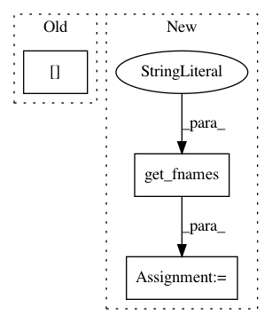

23a07e8601cbdba5ece453864bc6d11e3431543e,dipy/workflows/tests/test_align.py,,test_slr_flow,#,42
Before Change
data_path = get_fnames("fornix")
streams, hdr = nib.trackvis.read(data_path)
fornix = [s[0] for s in streams]
f = Streamlines(fornix)
f1 = f.copy()
After Change
with TemporaryDirectory() as out_dir:
data_path = get_fnames("fornix")
data_path = get_fnames("fornix")
fornix = load_tractogram(data_path, "same",
bbox_valid_check=False).get_streamlines()
f = Streamlines(fornix)
f1 = f.copy()
f1_path = pjoin(out_dir, "f1.trk")
sft = StatefulTractogram(f1, data_path, Space.RASMM)
save_tractogram(sft, f1_path, bbox_valid_check=False)
f2 = f1.copy()
f2._data += np.array([50, 0, 0])
In pattern: SUPERPATTERN
Frequency: 3
Non-data size: 3
Instances
Project Name: nipy/dipy
Commit Name: 23a07e8601cbdba5ece453864bc6d11e3431543e
Time: 2019-07-23
Author: francois.m.rheault@usherbrooke
File Name: dipy/workflows/tests/test_align.py
Class Name:
Method Name: test_slr_flow
Project Name: nipy/dipy
Commit Name: 6636b1363d90aafa2acd9f782be9815f8b9dac01
Time: 2020-01-03
Author: skab12@gmail.com
File Name: doc/examples/streamline_registration.py
Class Name:
Method Name:
Project Name: nipy/dipy
Commit Name: 0b1e027a6eeb60553930ae4752a07fc1c0bcc6b7
Time: 2021-04-03
Author: skab12@gmail.com
File Name: doc/examples/denoise_nlmeans.py
Class Name:
Method Name: